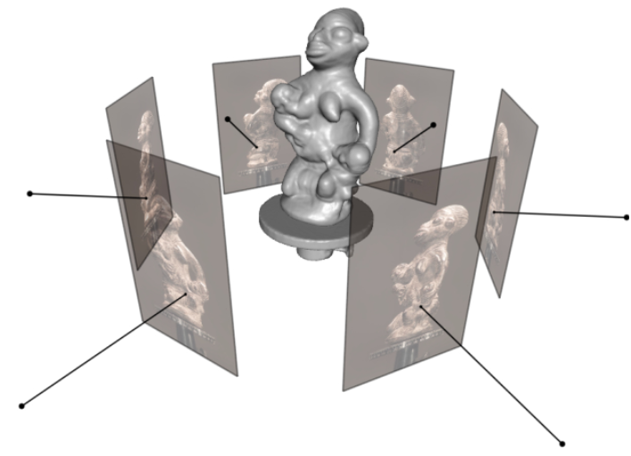

多视角立体视觉（MVS） 发表于 2023-07-05 分类于 逆渲染 多视角立体视觉简介。 多视角立体视觉（Multiple View Stereo，MVS）是对立体视觉的推广，能够在多个视角（从外向里）观察和获取景物的图像，并以此完成匹配和深度估计。 MVS方法的基本流程如下： 收集同一物体多角度的图像 针对每个图像计算相机参数 从图像集和相应的摄像机参数重建场景的3D几何图形  可选择地重建场景的形状和纹理颜色 ---------------------本文结束---------------------